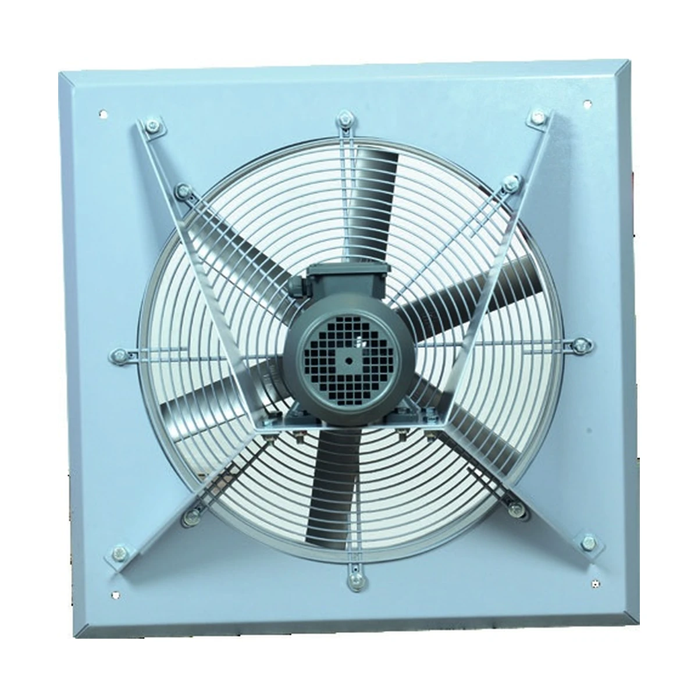
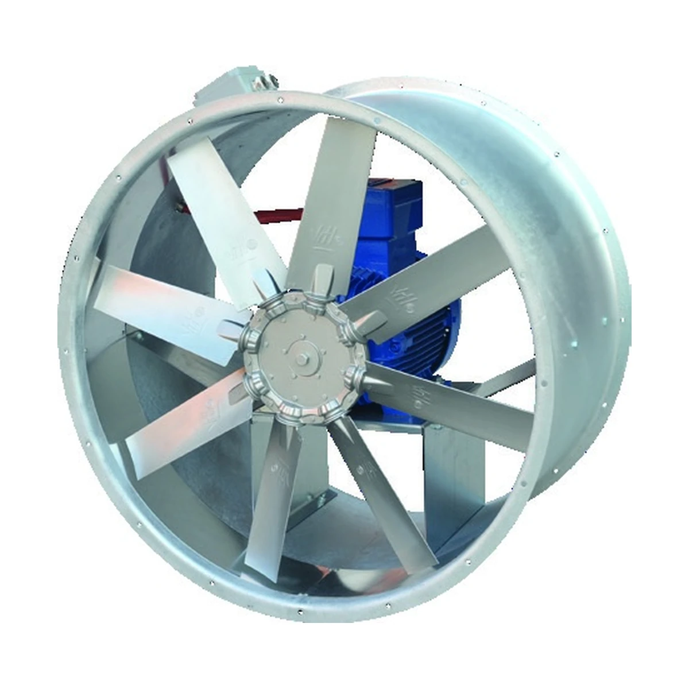
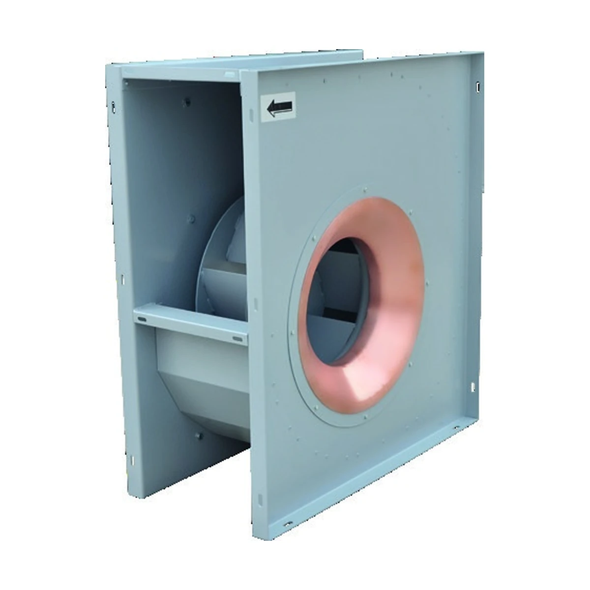
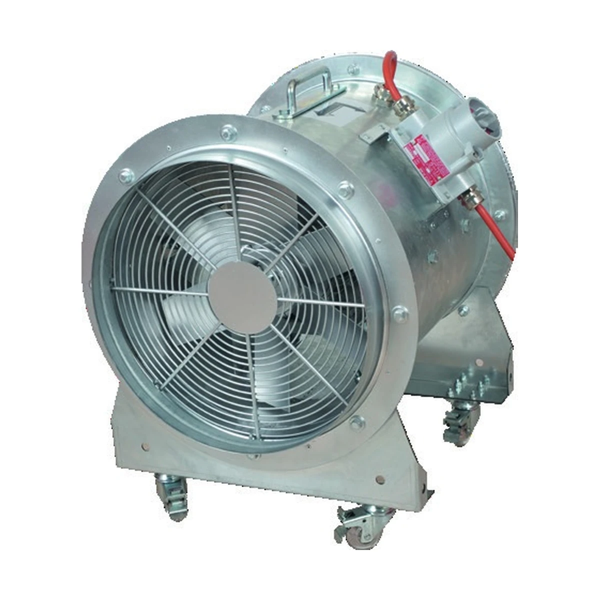
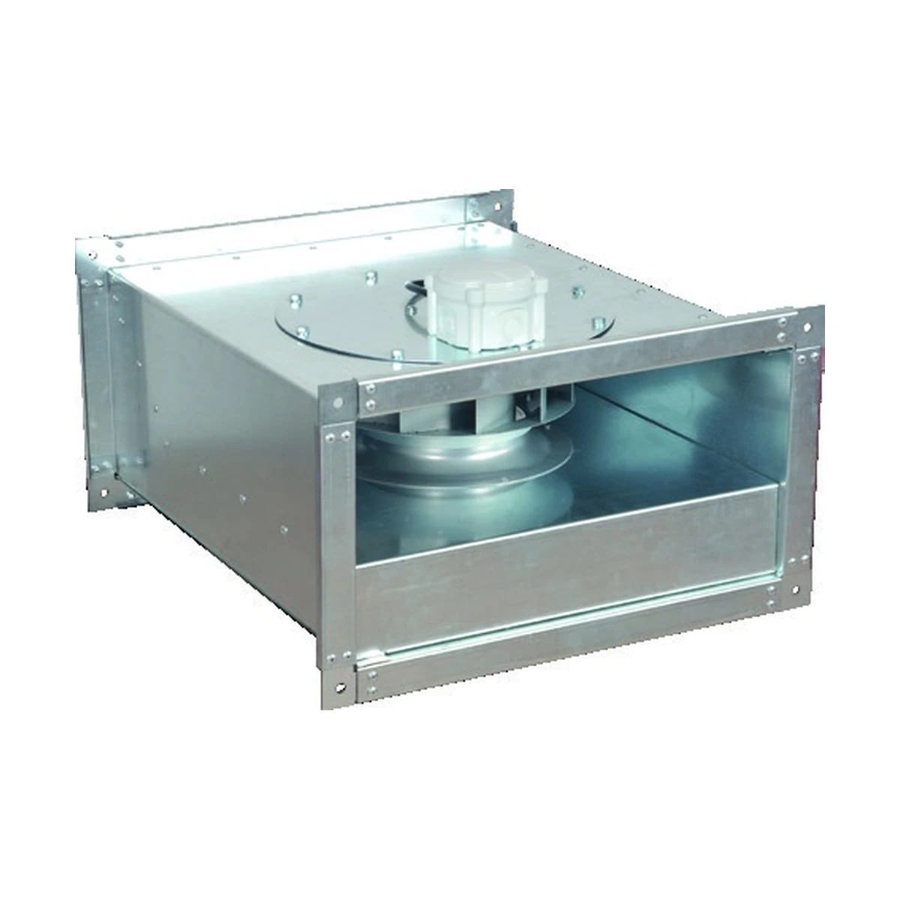
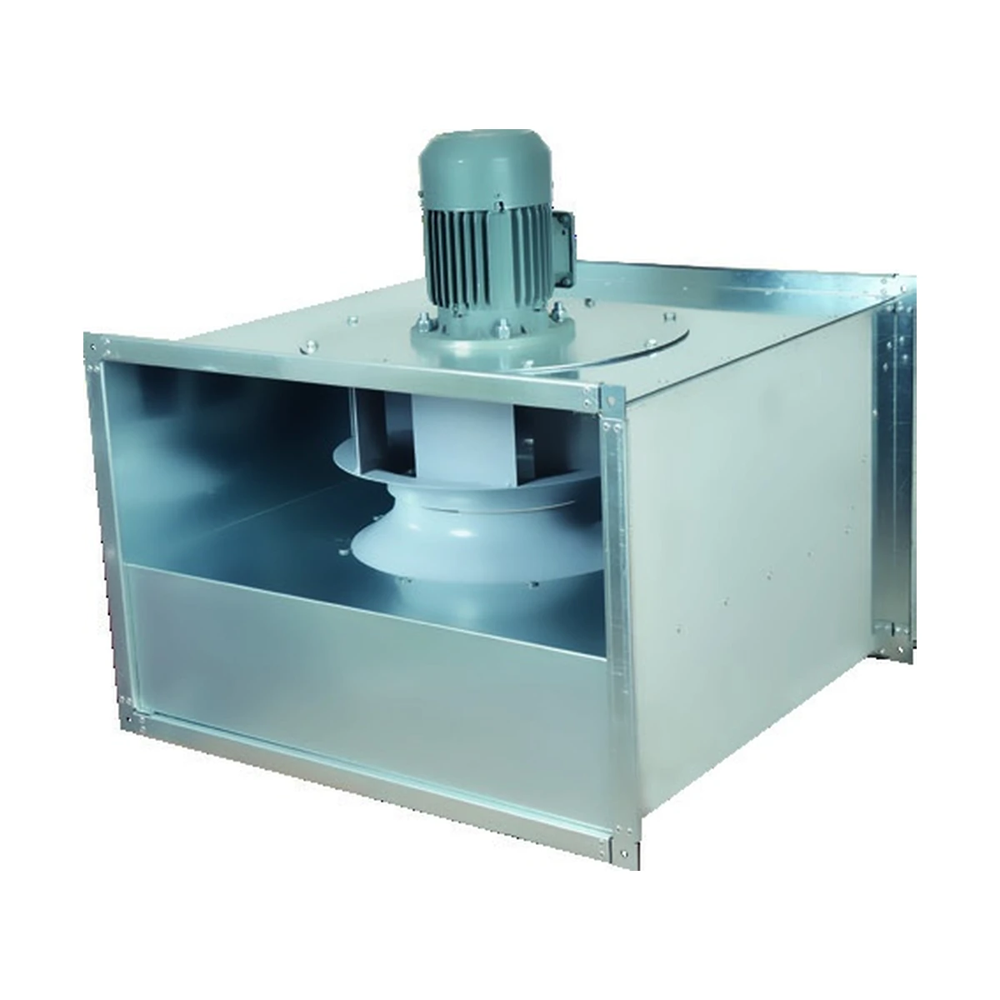

012 Ürün

Aksiyal Fanlar
Yüksek hava debisinin düşük basınç kaybıyla taşınması gereken endüstriyel uygulamalar için.
AXD Kanal TipiAXW Duvar Tipi
Teknik bilgi alın ↗ÜRÜNLER
Endüstriyel tesislerden tünel ve otoparklara, tehlikeli alanlardan ticari yapılara kadar her ihtiyaca özel fan çözümleri.
Kategorileri keşfedin ↓ÜRÜN KATEGORİLERİ
Ürün seçimi için hava debisi, basınç, sıcaklık, ortam sınıfı ve montaj koşullarını birlikte değerlendiriyoruz.
Yüksek hava debisinin düşük basınç kaybıyla taşınması gereken endüstriyel uygulamalar için.

Yapı içindeki kirli ve sıcak havanın çatı üzerinden kontrollü şekilde tahliyesi için.

Otopark, tünel ve yangın güvenliği projelerinde duman kontrolü ve acil tahliye için.

Patlayıcı atmosfer riski bulunan tesislerde güvenli hava transferi için ATEX çözümleri.

Ses yalıtımı, kompakt yerleşim ve servis kolaylığını bir araya getiren kabinli fanlar.

Kanal sistemlerine doğrudan entegre edilen, kompakt ve verimli havalandırma çözümleri.

Yüksek basınç gerektiren proses ve endüstriyel hava taşıma uygulamaları için.
KATEGORİ İÇİNDEKİ MODELLER
Her kategori altında ilgili ürün ailelerini doğrudan görebilir; model sayfasında teknik verileri, kullanım alanlarını ve Fan Selection bağlantısını inceleyebilirsiniz.
Aksiyal Fan Modelleri
Yüksek hava debisini düşük basınç kaybıyla taşımak için aksiyal fan serileri.





Çatı Tipi Fan Modelleri
Çatı üzerinden dikey veya yatay atışlı egzoz ve havalandırma çözümleri.
Duman Egzost Fan Modelleri
Otopark, tünel ve yangın güvenliği projelerinde duman kontrolü için fanlar.
Exproof Fan Modelleri
Patlayıcı atmosfer riski bulunan tesislerde ATEX uyumlu hava transferi.





Hücreli Fan Modelleri
Kabinli yapı, ses yalıtımı ve servis kolaylığı gerektiren uygulamalar için.
Kanal Tipi Fan Modelleri
Kanal sistemlerine doğrudan entegre edilen kompakt fan çözümleri.


Salyangoz Fan Modelleri
Yüksek basınç gerektiren proses ve endüstriyel hava taşıma uygulamaları için.
MÜHENDİSLİK DESTEĞİ
Debi, basınç, sıcaklık ve ortam koşullarını paylaşın; uygun ürün ve teknik çözüm için size dönüş yapalım.